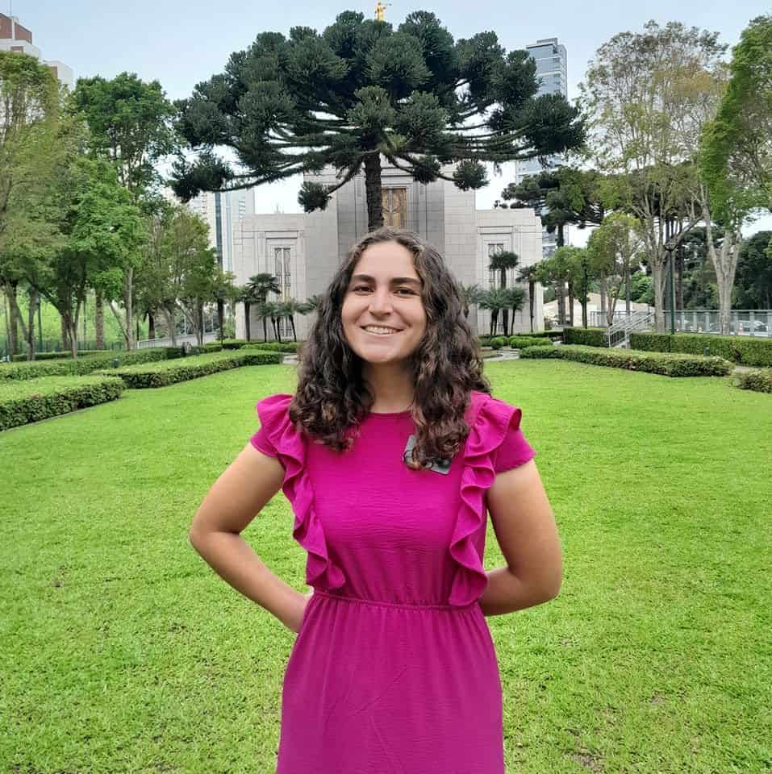

About Me
I am from Brazil and I live in Portugal and I love to go to the temple, this was why I choose one of my pictures to be at the temple. There is for sure my favorite place and it is a very important thing about myself. I am persuing Software Development Bachelor's degree at BYU Idaho. I am Young Adults Leader in my ward calling, I love spend time with them and learn of them. I never though of studying programming before, but after my mission I felt the impression that would be a good decision. Even after the feeling of approval, I still was afraid, but after I started, I felt joy and really enjoyed what I was doing mainly because I discovered two things: The Lord was with me and would help me and that I was capable of it
Brasil, oficialmente República Federativa do Brasil, é o maior país da América do Sul e da região da América Latina, sendo o quinto maior do mundo em área territorial (equivalente a 47,3% do território sul-americano), com cerca de 8,5 milhões de quilômetros quadrados, e o sétimo em população (com 212 milhões de habitantes, em julho de 2024). É o único país na América onde se fala majoritariamente a língua portuguesa e o maior país lusófono do planeta, além de ser uma das nações mais multiculturais e etnicamente diversas, em decorrência da forte imigração oriunda de variados locais do mundo.